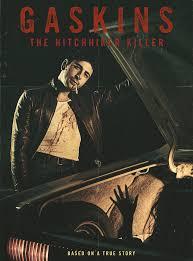
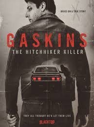

I'd assumed the mirror one-sheet — eyes in the rearview, one lit and one in shadow — was the only poster this film had. I was wrong. Two more pieces of art are making the rounds, and they're a genuinely different approach: same man, same car, but this time you see all of him.


Key art circulating alongside the official U.S. one-sheet. Used here for commentary and review.
The same choice, argued the opposite way
The mirror poster is about withholding — you get the eyes and nothing else, and I spent five hundred words in May on what that withholding was doing. These two do the opposite. Full figure, full face, headlights on behind him, hand on the hood of the car like he's either fixing it or about to close it on someone. This is a poster that wants you to clock the actor. That's a completely different bet: one campaign is selling atmosphere, the other is selling a performance.
I don't know which one came first, or whether one is a teaser and the other the "real" key art — nobody sent me a memo. What I can tell you is they're doing different jobs, and a studio usually only runs two different jobs at once when it's targeting two different audiences. The mirror poster reads prestige-adjacent. This one reads straight-up genre thriller. Both are honest about the film, probably — it's being marketed as true-crime and thriller-horror, per the official genre listing.
The Blacktop mark, explained
Here's the part that actually clarifies something I got wrong back in May, when I called Blacktop "the distributor" because their name was the only one I had. I corrected that on release day: Blacktop International handles international sales, and Quiver Distribution is who actually put this in front of U.S. audiences on August 28.
Seeing the Blacktop mark on the bottom of one of these two — and not on the U.S. one-sheet — is the clearest evidence yet of that split. My guess: this is the international sales art, the image Blacktop uses to pitch the film to distributors outside the U.S., while the mirror one-sheet is Quiver's domestic key art. I'd hold that loosely, but it fits everything else I know about how these companies are credited.
Either way — more to screenshot, more angles to post if you're making something. If you use these, the mirror one-sheet is still the one with the official U.S. distributor's blessing; treat these two as international/alternate art rather than the primary U.S. campaign image.
The original deep-dive on the mirror poster is here. Want the mirror poster pre-sized for posting? It's in the pocket file.